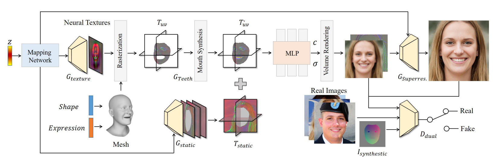

3DMM
核心思想
人脸可以在三维空间中进行一一匹配，并且可以由其他许多幅人脸正交基加权线性相加而来。每一个三维的人脸，可以由一个数据库中的所有人脸组成的基向量空间中进行表示，而求解任意三维人脸的模型，实际上等价于求解各个基向量的系数的问题。
人脸的基本属性包括形状和纹理，每一张人脸可以表示为形状向量和纹理向量的线性叠加。
人脸模型
- 首先计算形状和纹理向量的平均值。
- 中心化人脸数据。
- 分别计算协方差矩阵。
- 求得形状和纹理协方差矩阵的特征值$\alpha, \beta$和特征向量$s_i, t_i$。
求解方法
Model Fitting：如何将2D人脸拟合到3D模型上？
“A Morphable Model For The Synthesis Of 3D Faces” (1999) 提出的方法是Analysis by Synthesis。
- 初始化一个3维的模型，需要初始化内部参数$\alpha, \beta$，以及外部渲染参数，包括相机的位置，图像平面的旋转角度，直射光和环境光的各个分量，图像对比度等共20多维，有了这些参数之后就可以唯一确定一个3D模型到2D图像的投影。
- 在初始参数的控制下，经过3D至2D的投影，即可由一个3D模型得到2维图像，然后计算与输入图像的误差。再以误差反向传播调整相关系数，调整3D模型，不断进行迭代。每次参与计算的是一个三角晶格，如果人脸被遮挡，则该部分不参与损失计算。
- 具体迭代时采用由粗到精的方式，初始的时候使用低分辨率的图像，只优化第一个主成分的系数，后面再逐步增加主成分。在后续一些迭代步骤中固定外部参数，对人脸的各个部位分别优化。
存在的问题：
- 该问题是一个病态问题，本身并没有全局解，容易陷入不好的局部解。
- 人脸的背景干扰以及遮挡会影响精度，而且误差函数本身不连续。
- 对初始条件敏感，比如基于关键点进行优化时，如果关键点精度较差，重建的模型精度也会受到很大影响。
发展
数据集：Basel Face Model（200个人脸），LSFM（9663个人脸），BFM 2017（包含表情系数），FaceWarehouse（国内的数据集，没有开源）
基于3DMM的表情模型
- 加性模型：线性模型，将表情作为形状的一个偏移量
- 乘性模型：因为表情也会改变人脸的形状，因此它和形状并非完全正交的关系，所以有的研究者提出了乘性模型
纹理模型：也被称为表观模型，它相对于形状模型来说更加复杂，受到反射率和光照的影响，不过大部分的3DMM模型不区分两者，所以我们将其视为一个因素，即反射率。
深度学习3DMM重建
全监督方法 3DMM CNN：使用ResNet101网络直接回归出3DMM的形状系数和纹理系数，形状系数和纹理系数各有99维
自监督方法 MoFa：三维人脸重建中真实的数据集获取成本非常高，这一类方法不依赖于真实的成对数据集，它将二维图像重建到三维，再反投影回二维图
更好的三维特征编码 3DDFA, PRNet
EG3D
贡献
- 提出一种triplane-based 3D GAN框架。在保持效果的情况下，提速明显。
- 提出一种3D GAN训练策略dual discrimination，用于保持多视角一致性。
- 提出generator pose conditioning，建模pose相关的属性，例如：表情。
- 在FFHQ和AFHQ Cats的3D-aware图片生成中取得sota结果。
Pipeline
Next3D
Next3D: Generative Neural Texture Rasterization for 3D-Aware Head Avatars Paper
Overview
目前市场上，生成对抗网络（GAN）已经被广泛应用于2D图像的合成，但是在3D领域中，受限于计算的复杂度，目前的方法仍然无法实现高分辨率、高质量的图像合成。此外，当下主流的3D GAN方法在虚拟人生成上，也无法对面部表情、眨眼和凝视方向进行细粒度控制。为了解决这些问题，我们提出了一种新颖的可驱动化3D GAN框架：Next3D。该框架可以从非结构化2D图像中无监督地学习生成高保真和多视图一致性的面部头像，并且在驱动处理上，可以实现全头旋转、面部表情、眨眼和凝视方向等精细控制。此外，Next3D还提供了强大的3D先验知识，可以用于下游任务如3D感知风格化等。
方法
为了对面部属性进行细粒度控制，我们通过 3D 可变形面部模型（3DMM）来显式或隐式地描述生成辐射场中的变形。显式方法提供细粒度的表达控制，但不能处理由头发和配饰引起的拓扑变化，而隐式方法可以模拟各种拓扑，但由于不受约束的变形场而导致泛化能力有限。

Next3D是一种生成式纹理栅格化三平面（Generative Texture-Rasterized Tri-planes，简称GTRT）的3D表示。它可以从非结构化的2D图像中合成高质量且3D一致的面部头像，并实现对全头旋转、面部表情、眼睛眨动和凝视方向的精细控制。同时，我们将纹理嵌入到GTRT中，使其在参数化网络模板之上学习生成高质量和高保真的纹理信息，然后通过光栅化将它们投影到三个正交视图的特征平面中，形成用于体积渲染的三平面特征表示，用于提高渲染效率。
此外，在3DMM（3D Morphable Model）中，通常只对面部外观进行建模，而忽略了口腔内部的细节——口腔内部的细节对于面部头像合成的质量至关重要。因此，我们提出了一个特定模块“efficient teeth synthesis module”，用于建模口腔内部的细节，并通过样式调制UNet来完成模板网格所遗漏的内部口腔特征，引入变形感知鉴别器来进一步规范变形精度，从而提高合成图像与预期变形2D投影之间的对齐度。